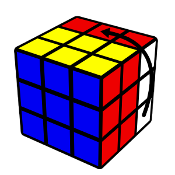
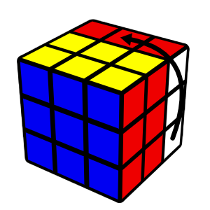

Each move means to turn that side clockwise, as if you were facing that side.


 
U D R L F B
An apostrophe (pronounced as prime) means to turn the face in the opposite direction (counterclockwise).


U' D' R' L' F' B'
The number 2 means to turn that face twice.
U2 D2 R2 L2 F2 B2
Wide Moves
Wide moves turn 2 layers at once. They can be written in 2 ways:1. Lower case: u, d, r, l, f, b
2. Ending in w: Uw, Dw, Rw, Lw, Fw, Bw
Uw/u Dw/d Rw/r Lw/l Fw/f Bw/b
There is also Uw' and Uw2 etc.
Cube Rotations
Cube rotations are written as x, y, z.x follows the R direction, y follows the U direction, z follows the F direction.

x y z
There is also x' and x2, etc.
Slice Moves
Slice moves are written as M, E, S. Slice moves only turn the middle layer.M follows the L direction, E follows the D direction, S follows the F direction.
M E S
There is also M' and M2, etc.
Basic Moves Cheat Sheet
U D R L F B
Uw/u Dw/d Rw/r Lw/l Fw/f Bw/b


x y z M E S